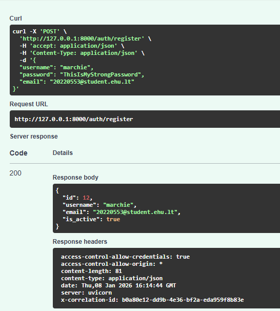
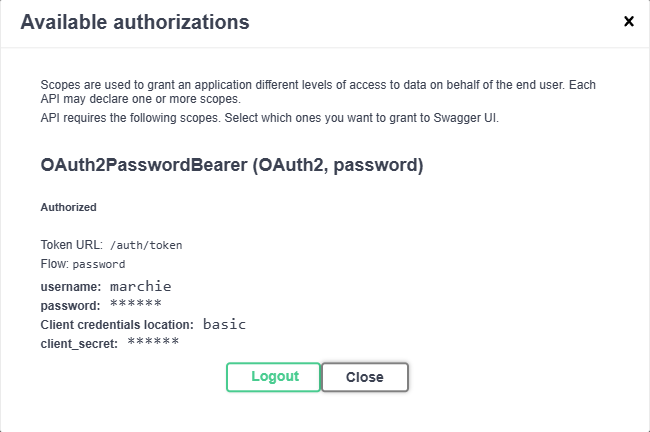
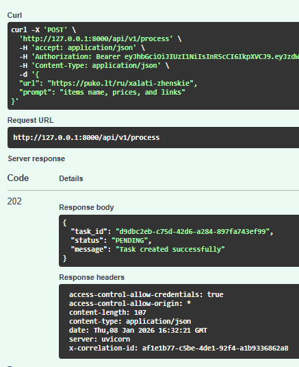
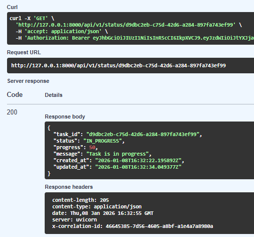
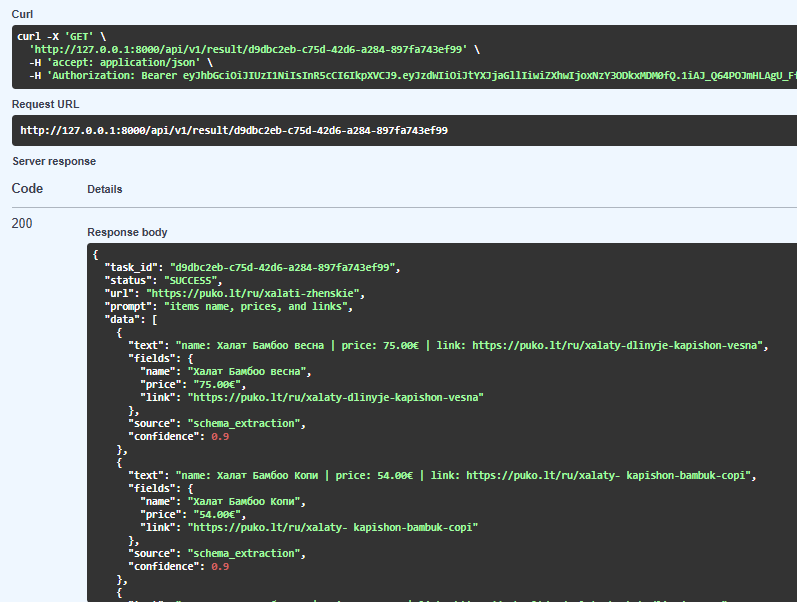

Student: Yan Marchan
Supervisor: Evgeniy Tretyak
Jan 2026
CSS/XPath/regex) and require constant
maintenance.[LINK], [BUTTON], headings, tables, images).
Client
|
v
FastAPI API (port 8000) -----> PostgreSQL 15 (tasks, results, cache)
|
v
Redis (Celery broker / rate-limit store)
|
+--> AI Worker (queue: ai_queue) <----- Scheduler (Celery Beat)
|
+--> Headless Worker (queue: fetching_queue, Playwright) ---> Target Websites
POST /api/v1/process (JWT required).keywords /
schema_fields./api/v1/status and
/api/v1/result./docsPOST /auth/register, POST /auth/token → Bearer token
POST /api/v1/process,
GET /api/v1/status/{task_id}, GET /api/v1/result/{task_id}POST/GET/DELETE /api/v1/jobs
POST /api/v1/process
{
"url": "https://example.com/page",
"prompt": "Extract product title and price"
}
→ 202 { "task_id": "...", "status": "PENDING" }
inner_text: visible body textsemantic_text: enriched text with markers ([LINK],
[BUTTON], headings, tables, image alt/URLs)html: full DOM snapshot (stored with defensive cap)network: selected XHR/fetch/document/script events (preview)keywords (single-field extraction)schema_fields (multi-field structured extraction)target (what the user wants overall)"Price" →
price).schema_fields /
keywords).(domain, full_url, fields, source_type) (exact URL match).semantic_text and stores it as
task page_content for traceability.used_cached_parser=true.
fields = normalize(intent.schema_fields or intent.keywords)
key = (domain, full_url, fields)
if cache.has(key, source="SEMANTIC"):
data = run_parser(cache[key], semantic_text)
elif cache.has(key, source="CSS/HTML"):
data = run_parser(cache[key], html)
else:
data = llm_extract(semantic_text/html)
cache.store(key, validated_parser)
return { data, metadata: { used_cached_parser } }
POST /api/v1/jobs.| Entity | Purpose |
|---|---|
| Users | JWT authentication + ownership of tasks and schedules |
| ScrapingTasks | Status lifecycle, prompt, intent (JSON), sources (text/HTML), extracted JSON results |
| ScheduledJobs | Cron schedules linked to user; next-run bookkeeping |
| ParserCache | Validated parsers (regex/CSS/JSONPath) for reuse + samples/confidence |
X-Correlation-Id propagated API → Celery → workers for
traceable logs./health (liveness) and /api/v1/health (includes DB
check).coverage_report.txt).
Coverage summary (pytest-cov):
TOTAL 4168 statements, 926 missed → 78% covered




task_id/api/v1/status/{task_id} until
SUCCESS
GET /api/v1/result/{task_id}fields (e.g., name/price/link)total_matches +
used_cached_parser
Docs: docs_old/ARCHITECTURE.md, docs_old/USER_GUIDE.md
API: http://localhost:8000/docs